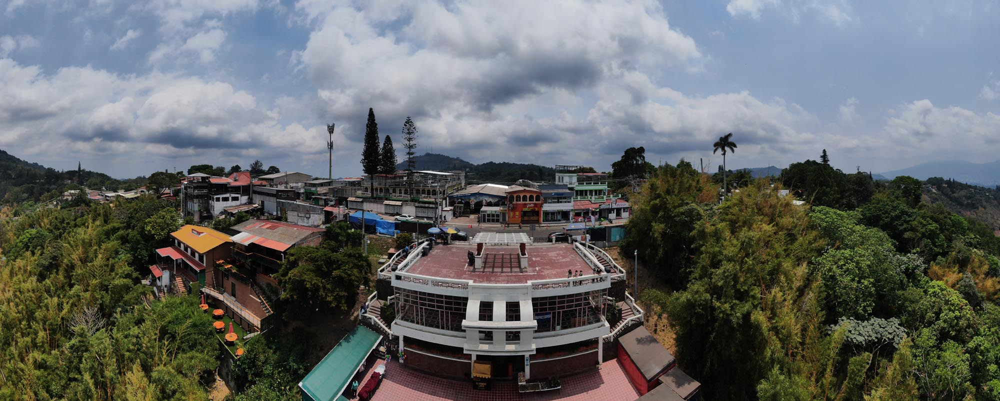
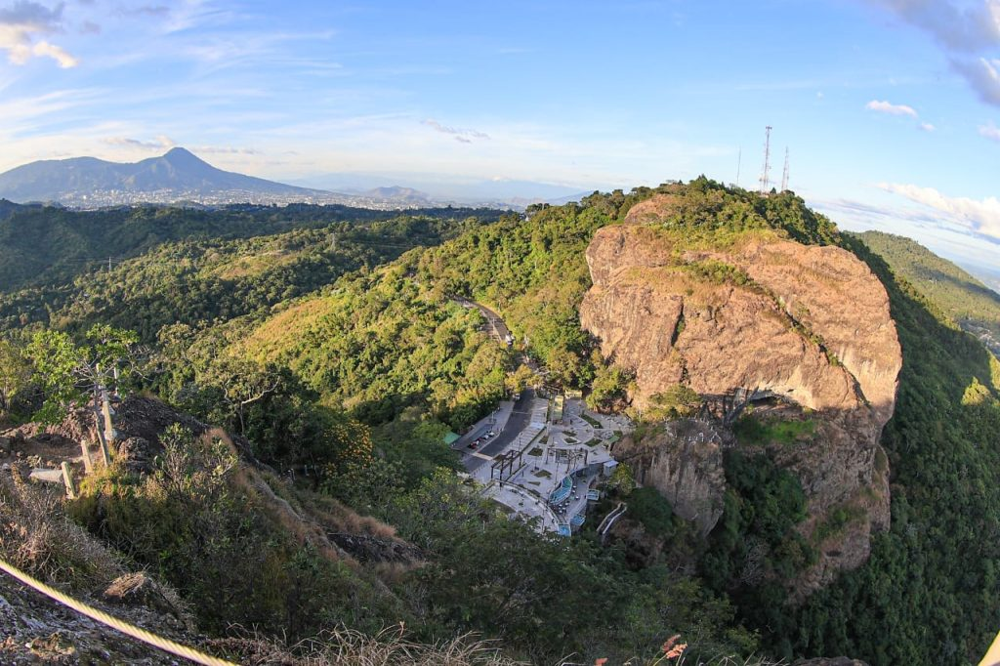
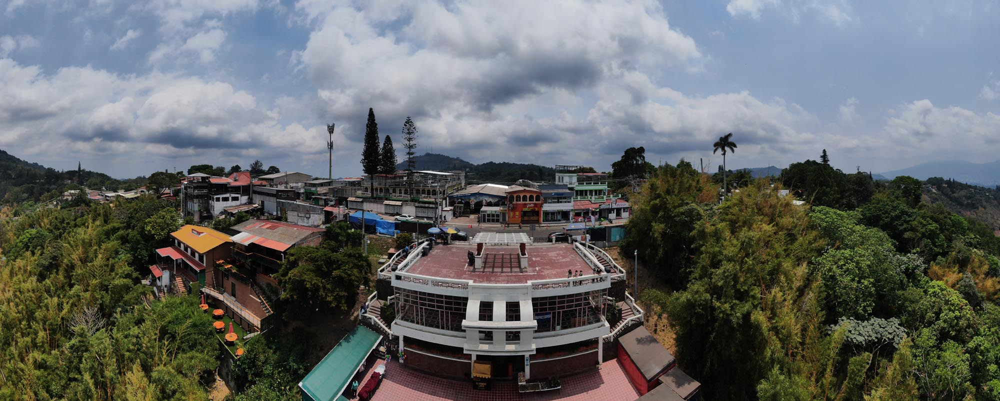
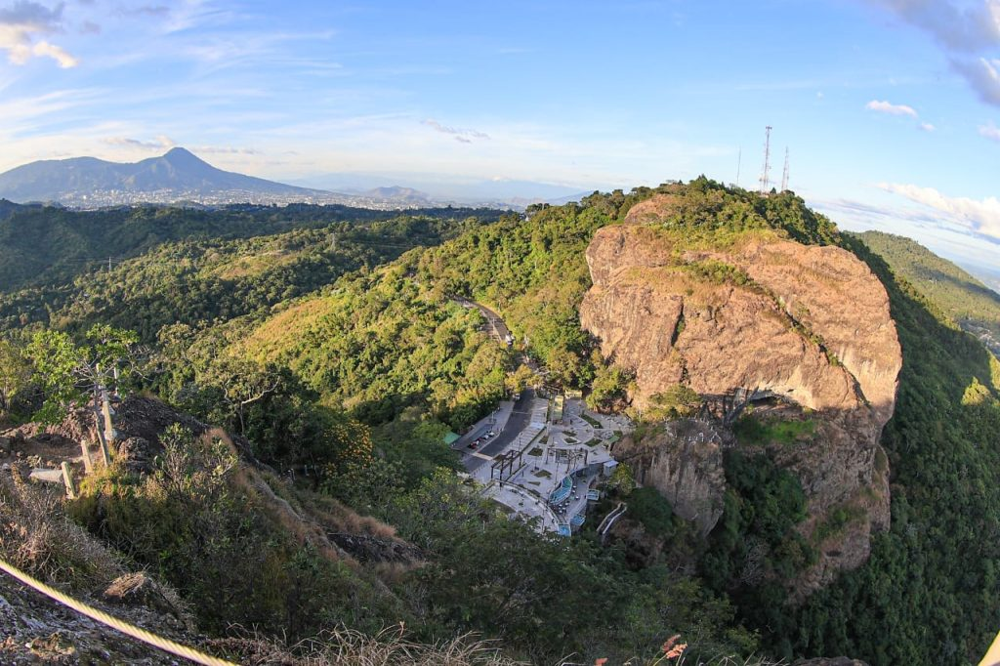

Rutas De Senderismo
Click en cada imagen para mas información


 



Ruta Panchimalco - Puerta del Diablo
🚩Dificultad: Alta (por la distancia y desnivel)
♾️Distancia: Aproximadamente 7-9 km (dependiendo del punto de inicio en Panchimalco)
🕑Tiempo estimado: 3-4 horas
📍Descripción:
Inicia en el pueblo histórico de Panchimalco, un lugar con una gran riqueza cultural e indígena. El
sendero atraviesa áreas
boscosas y zonas con pendientes pronunciadas. Ofrece vistas espectaculares del valle y de la Puerta del
Diablo a medida que
se asciende.
Se recomienda hacerla con un guía, ya que algunos tramos pueden ser confusos y hay bifurcaciones
que
pueden desorientar a los caminantes.
Ruta del Parque Balboa al Peñón de la Puerta del Diablo
🚩Dificultad: Moderada
♾️Distancia: Aproximadamente 2 km (ida)
🕑Tiempo estimado: 45 min - 1 hora
📍Descripción:
Inicia en el Parque Balboa y asciende hasta los peñones de la Puerta del Diablo, desde donde se pueden
apreciar vistas
panorámicas del Lago de Ilopango, el Volcán San Vicente y el Océano Pacífico.
Ruta directa al mirador de la Puerta del Diablo
🚩Dificultad: Baja
♾️Distancia: Menos de 1 km
🕑Tiempo estimado: 20-30 min
📍Descripción:
Un sendero corto pero empinado que lleva directamente al mirador principal de la Puerta del Diablo. Es
ideal para quienes buscan
una caminata rápida con excelentes vistas.
Ruta hacia Los Planes de Renderos
🚩Dificultad: Moderada
♾️Distancia: 3-4 km (ida y vuelta)
🕑Tiempo estimado: 1.5 - 2 horas
📍Descripción:
Este sendero conecta la Puerta del Diablo con Los Planes de Renderos, un área boscosa con varios miradores y restaurantes típicos.
Ruta de los Peñones de la Puerta del Diablo
🚩Dificultad: Alta
♾️Distancia: Variable, depende del peñón elegido
🕑Tiempo estimado: 1-2 horas
📍Descripción:
Para los más aventureros, esta ruta implica escalar o caminar sobre las formaciones rocosas de la Puerta
del Diablo. Algunas
partes requieren equipo de seguridad para escalada o rappel.